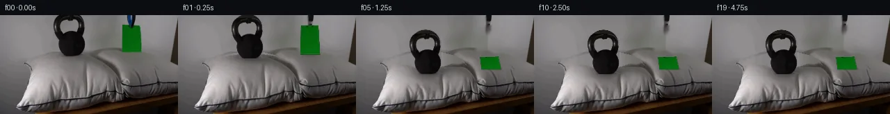

![首帧]()

Round 00
2026-11-05T20:11:21.355383+00:00像素候选变化代码 +287/−0inspection 更新
pixels 08d5efc5d7f3310a · code f0e2282de78491ac
查看本轮 generate.py 真实 diff
--- previous/generate.py
+++ current/generate.py
@@ -0,0 +1,287 @@
+"""Deterministic source-pixel animation; no model, renderer, or image references."""
+from pathlib import Path
+import json
+import hashlib
+import math
+import cv2
+import numpy as np
+from PIL import Image, ImageDraw
+from scipy.ndimage import gaussian_filter
+from artifact_io import save
+
+ROOT = Path(__file__).resolve().parent
+W, H = 256, 144
+SOURCE = np.array(Image.open(ROOT / 'first_frame.png').convert('RGB'))
+Y, X = np.mgrid[:H, :W].astype(np.float32)
+
+
+def polygon(points):
+ m = np.zeros((H, W), np.uint8)
+ cv2.fillPoly(m, [np.array(points, np.int32)], 255)
+ return m
+
+
+def largest_fill(mask):
+ contours, _ = cv2.findContours(mask.astype(np.uint8), cv2.RETR_EXTERNAL,
+ cv2.CHAIN_APPROX_SIMPLE)
+ result = np.zeros((H, W), np.uint8)
+ cv2.drawContours(result, [max(contours, key=cv2.contourArea)], -1, 255, -1)
+ return result
+
+
+gray = cv2.cvtColor(SOURCE, cv2.COLOR_RGB2GRAY)
+domain = (X >= 75) & (X <= 124) & (Y <= 59)
+kettle_outer = largest_fill((domain & (gray < 95)).astype(np.uint8))
+# Preserve bright reflections within the metal silhouette; make the handle
+# opening transparent so it reveals the stationary wall at its new location.
+hole_candidate = ((gray > 95) & (X >= 86) & (X <= 113) &
+ (Y >= 4) & (Y <= 26)).astype(np.uint8)
+_, holes = cv2.connectedComponents(hole_candidate)
+hole = holes == holes[15, 100]
+kettle_mask = kettle_outer.copy()
+kettle_mask[hole] = 0
+kettle_mask[59:, :] = 0
+kettle_alpha = gaussian_filter(kettle_mask.astype(np.float32) / 255, .38)
+
+green_mask = ((SOURCE[..., 1] > SOURCE[..., 0].astype(float) * 1.7) &
+ (SOURCE[..., 1] > SOURCE[..., 2].astype(float) * 1.5) &
+ (SOURCE[..., 1] > 45)).astype(np.uint8) * 255
+blue_domain = (X >= 181) & (X <= 196) & (Y <= 20)
+blue_test = ((SOURCE[..., 2] > SOURCE[..., 0].astype(float) * 1.12) &
+ (SOURCE[..., 2] > SOURCE[..., 1].astype(float) * 1.05) & blue_domain)
+blue_mask = largest_fill(blue_test.astype(np.uint8))
+blue_alpha = gaussian_filter(blue_mask.astype(np.float32) / 255, .35)
+
+# Remove the old object silhouettes and the green spill immediately underneath
+# the sheet, filling only these source regions from adjacent source pixels.
+remove = cv2.dilate(np.maximum(kettle_outer, np.maximum(green_mask, blue_mask)),
+ np.ones((3, 3), np.uint8))
+spill = polygon([(169, 49), (175, 47), (203, 48), (208, 56),
+ (202, 64), (177, 64), (169, 58)])
+remove = np.maximum(remove, spill)
+CLEAN = cv2.inpaint(SOURCE, remove, 5, cv2.INPAINT_NS).astype(np.float32)
+
+# The wall behind the kettlebell is recovered by row-wise interpolation of the
+# immediately adjacent wall, including its existing illumination gradient.
+for y in range(52):
+ left = SOURCE[y, 70:75].mean(axis=0)
+ right = SOURCE[y, 128:133].mean(axis=0)
+ for x in range(75, 126):
+ if remove[y, x]:
+ u = (x - 73) / 57
+ CLEAN[y, x] = left * (1-u) + right * u
+
+# A continuation of that same wall is revealed above the depressed pillow.
+wall = CLEAN.copy()
+for y in range(45, 94):
+ for x in range(44, 162):
+ c = CLEAN[43, x]
+ wall[y, x] = c + (y-43) * np.array([.04, .035, .025])
+
+top_x = np.array([24, 35, 47, 60, 76, 93, 108, 123, 138, 151, 161, 170, 177])
+top_y = np.array([132, 76, 66, 61, 56, 53, 52, 54, 58, 64, 75, 97, 118])
+top_curve = np.interp(X, top_x, top_y).astype(np.float32)
+pillow_mask = polygon(list(zip(top_x.tolist(), top_y.tolist())) +
+ [(164, 126), (142, 131), (114, 135), (81, 138),
+ (50, 141), (25, 141), (24, 135)])
+pillow_alpha = gaussian_filter(pillow_mask.astype(np.float32) / 255, .42)
… diff truncated; 200 more lines …